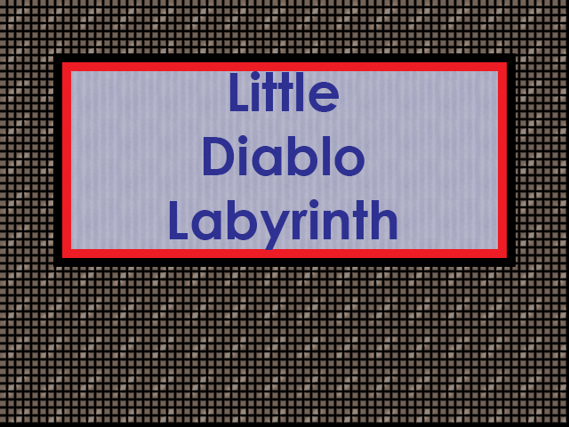
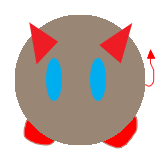
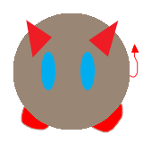
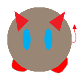

Little Diablo Labyrinth is another school project I put together. This time I chose to make a short puzzle game, similar to Atari's adventure but with obstacles. The biggest challenge was making the art assets and due to my hardware, my workflow was time consuming. Never the less, I think this is the most fun game I've made.
I had to think critically about how to make a simple game like this challenging in an intuitive way. Moving saws and laser beams were the first idea, but then I had the idea to incorporate some puzzle elements with the block and stopping the laser. That was a tough one to program but it worked out great!


 

